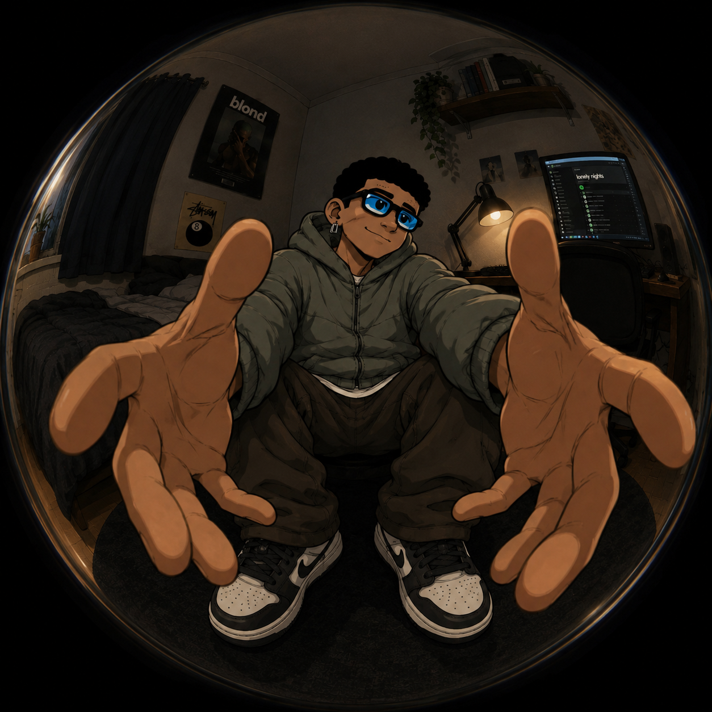
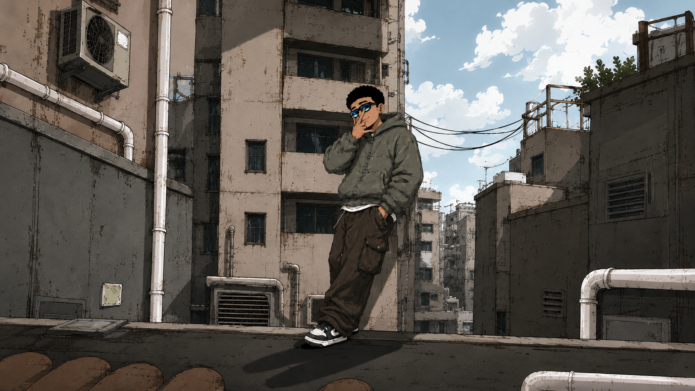
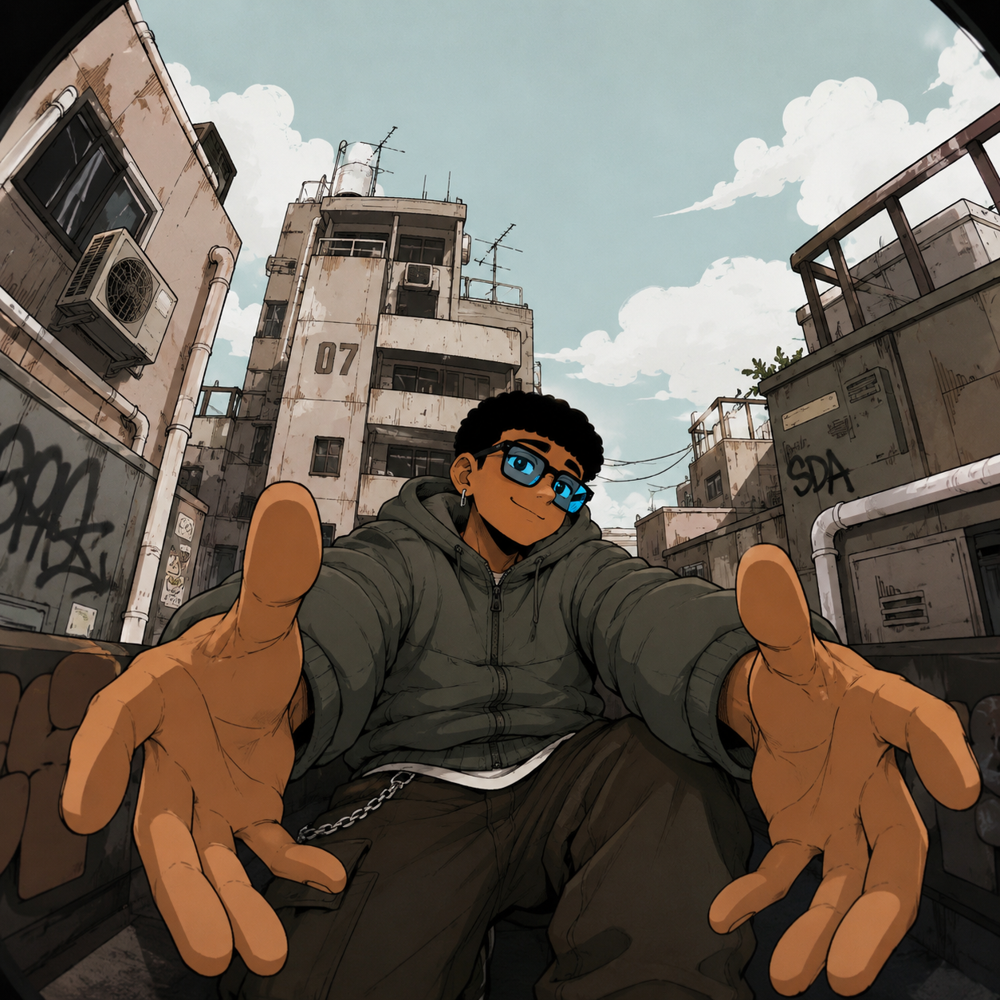
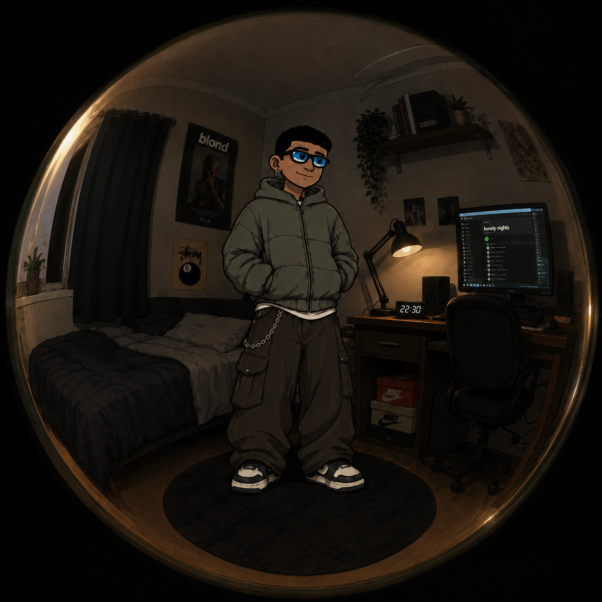
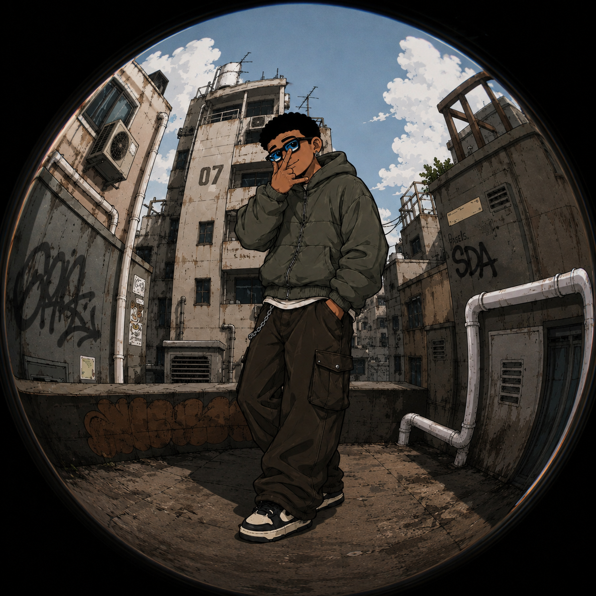
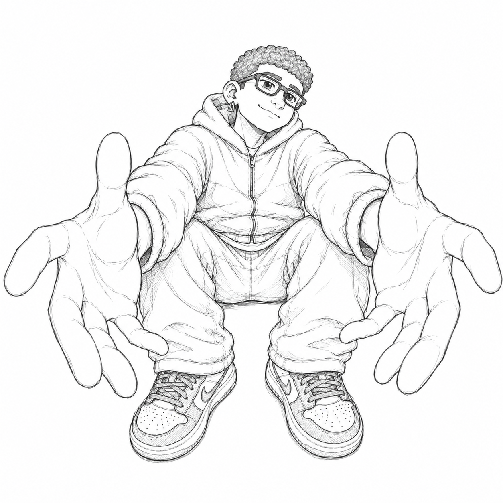
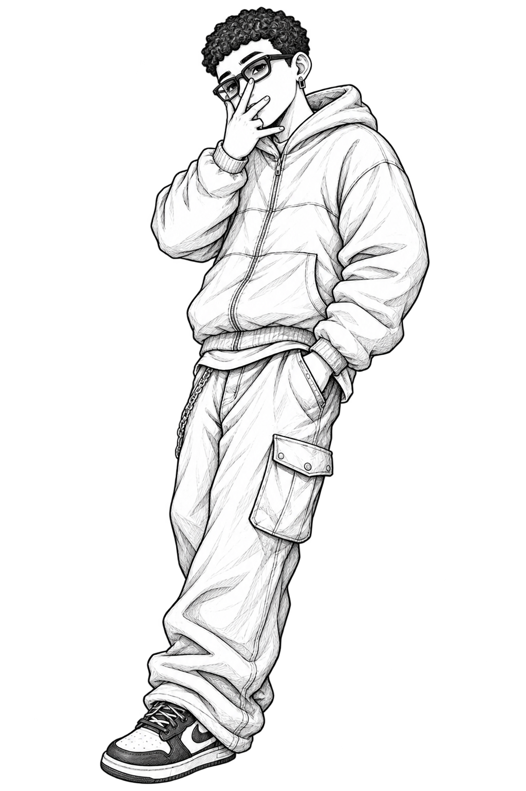

Digital Artist





My name is Brillian, but most people know me as Billy. I am an independent digital artist who enjoys creating character designs, mascots, and illustrated backgrounds.
My journey in the world of art actually began when I was a child. Even back then, my family noticed my interest and talent in drawing—or at least, according to them, I was pretty good at it. Well, parents are always your number-one supporters, right?
Because of that, my passion for art was fully supported. I started taking art classes at a very young age, continued throughout elementary school, and eventually attended an art school during my secondary education. In high school, I even took art preparation classes as a foundation for pursuing further education at university.
Eventually, I decided to study architecture. One of the reasons was that my drawing style at the time caught the attention of some of the instructors. Interestingly, my style back then was very free, rough, and unpolished—completely different from the various techniques I would later learn.
However, it was during this period that I gradually stopped painting. In fact, during some assessment sessions, we were not even allowed to use color in our drawings.
As time went by, my life took a different direction. I moved from place to place several times and worked as a photographer until the pandemic arrived.
Since the circumstances made it difficult for me to have enough space to create art traditionally as I used to, I decided to try something new: digital art. The desire to draw and paint again had become impossible to ignore.
However, starting with digital art was not as easy as I had imagined. The process felt completely different from what I was used to, and it was far less intuitive for me. On top of that, after spending years without consistently practicing my drawing skills, I felt that much of my ability had significantly declined.
It took me about a year of continuous learning, experimenting, failing, and trying again to gradually understand the new software and techniques. Through that long process, I discovered something I never expected: I completely fell in love with digital art.
There are still so many things I want to learn and countless ideas I want to bring to life through my work. So, if you're interested, I invite you to follow along and witness my journey as I continue to grow and develop as a digital artist.
P.S. I would also like to express my deepest gratitude to everyone who has supported and encouraged me to keep creating. I never imagined that this journey could grow as far as it has, especially with the help of social media.
The support from fellow artists, challenges, comments, and all the interactions I've experienced along the way have become an incredible source of inspiration for me. Many things I never imagined would happen have come to life through this process.
Thank you so much to everyone who has been a part of this journey.

simple lineart
50k

simple lineart
50k